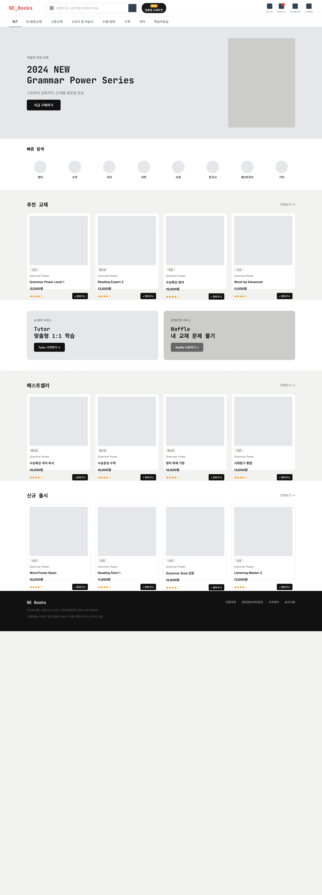

NE Books · Pencil 와이어프레임 v1.0
Pencil(.pen) 디자인 export
← 버전 선택으로
A안 (메인 세트)
MAIN
1. 메인 화면
BOOK-LIST
2. 교재목록 화면
BOOK-VIEW
3. 교재상세 화면
CART
4. 장바구니 화면
ORDER
5. 주문 / 결제
MY
6. 마이페이지
MY-WISH
7. 찜 (책갈피)
B안 (대안 탐색)
MAIN
1. 메인 화면 (B안)
BOOK-LIST
2. 교재목록 (B안)
BOOK-VIEW
3. 교재상세 (B안)
DATA
2-2. E-Book / 자료
DATA
8. 학습자료실
Pencil(.pen)에서 디자인한 화면을 이미지로 내보낸 뷰어입니다. 화면 전환은 좌측 메뉴로 가능하며, 폼·장바구니 등 실제 기능 동작은 포함하지 않습니다(디자인 검토용).
1. 메인 화면
NE Books 개편 Front 와이어프레임 · Pencil v1.0

※ 원본은 Pencil(.pen) 파일이며, 본 페이지는 해당 디자인을 캡처한 정적 이미지입니다.